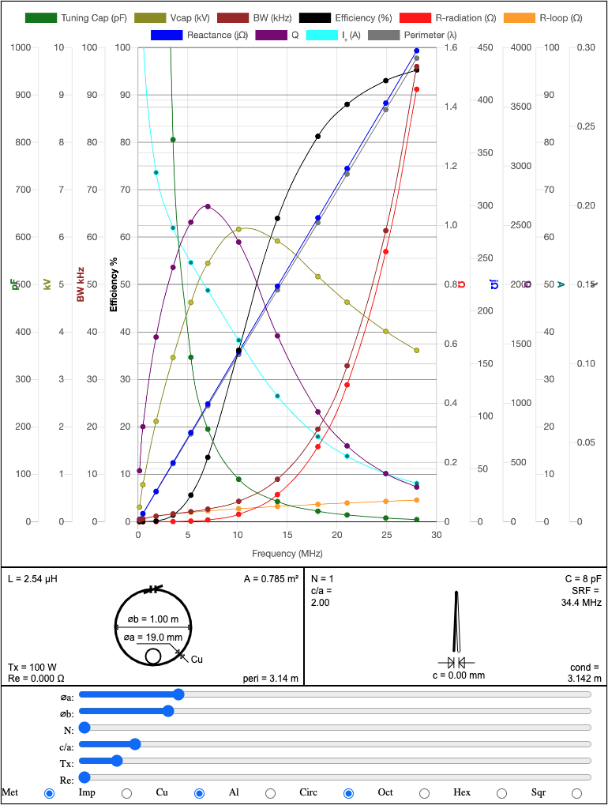
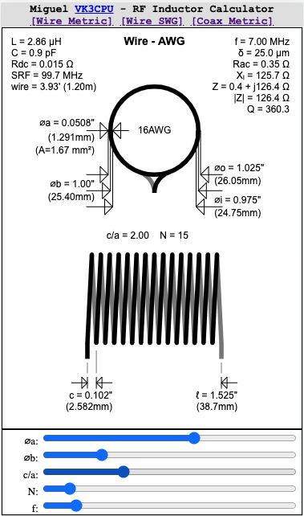
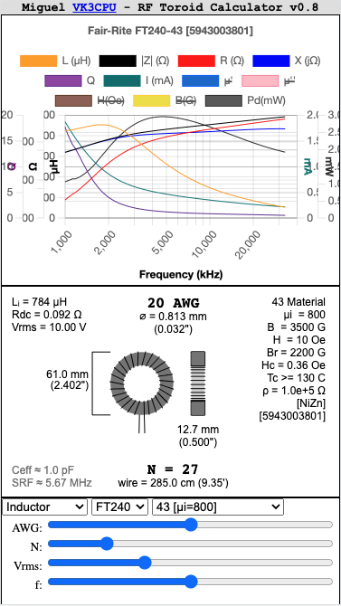
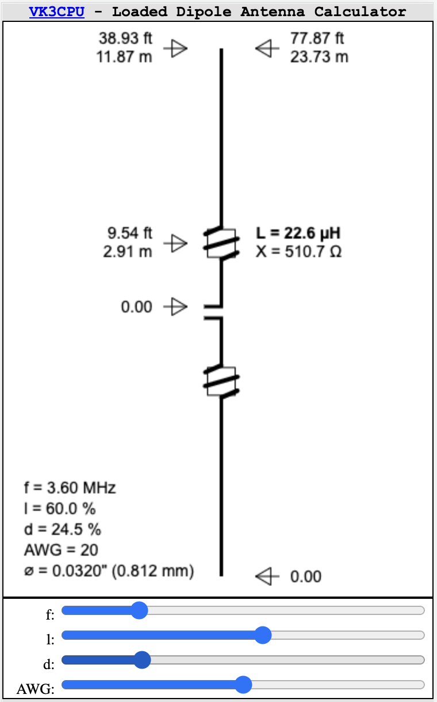

VK3CPU Interactive RF Calculators for Amateur Radio Operators
Interactive calculators developed for RF engineers and amateur radio operators intended for use on a
mobile phone browser.
Graphical small-loop antenna calculator that supports single and multi-turn loops made from Cu or Al tubing.
Also supports circular, octagonal, hexagonal and square shaped loops.

Air-core solenoid style RF inductor calculator

Graphical calculator for ferrite and powdered-iron toroids.

Graphical calculator for coil/inductor loaded dipole antennas.›
